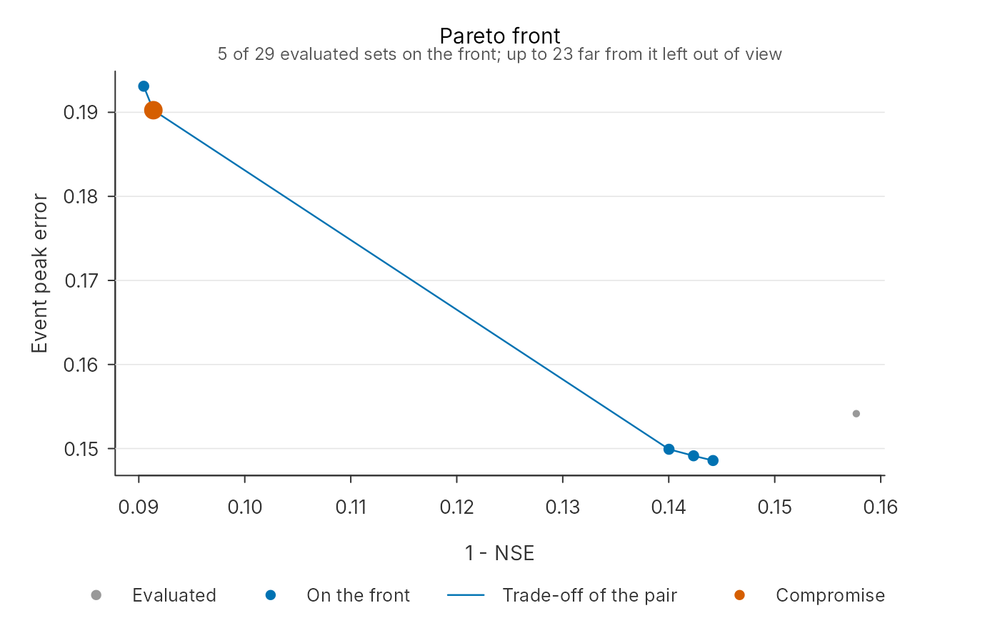

Calibrate PDM or coupled snow-PDM against multiple objectives
Source:R/calibrate_multi.R
calibrate_pdm_multi.RdSearches for the trade-off between several objectives at once, and returns the Pareto front: every parameter set that no other beats on all of them. Instead of one best fit for one blend of objectives, the front shows what each gain costs, such as how much fit to the recessions is lost for better peaks, so the choice between them is made in the open.
Usage
calibrate_pdm_multi(
config,
forcing,
observed,
lower,
upper,
objectives = c("nse_loss", "log_rmse", "abs_bias"),
scales = NULL,
weights = NULL,
n_samples = 64L,
starts = 2L,
seed = 1L,
warmup = 0L,
log_offset = 0.01,
control = list(maxit = 100),
method = c("padds", "dds", "lbfgsb", "nelder_mead"),
events = NULL,
event_share = 0.5,
event_screen = list(),
thresholds = NULL,
threshold_score = "csi",
event_settings = list(tolerance_h = 6, gap_h = 24, min_duration_h = 0),
log_scale = character(0),
start = c("flow", "soil"),
baseflow_fraction = 0.7,
soil_fraction = 0.5,
start_flow = NULL,
flow = c("q_m3s", "q_end_m3s"),
cores = getOption("pdmS7.cores", 1L)
)Arguments
- config
PDM configuration, or list(pdm=..., snow=...) for coupled calibration.
- forcing
Data frame with rain and pet; coupled runs also require temperature_c. Optional time column contains POSIXct timestamps.
- observed
Aligned observed discharge, m3/s. Missing observations are excluded.
- lower, upper
Named finite bounds with identical names/order. Coupled paths start with pdm. or snow., for example snow.melt_factor_mmh_c.
- objectives
Loss names from the table above.
- scales
Positive named metric divisors in objective order. NULL uses ones; choose meaningful scales before interpreting weighted compromises.
- weights
Nonnegative named vector or matrix with objective column names in order. Rows are normalized to sum one. NULL uses individual objectives and equal weights.
- n_samples
Nonnegative number of initial uniform random candidates.
- starts
For PA-DDS, the number of chains; otherwise the number of sampled starts refined per weight vector.
- seed
Nonnegative integer random seed.
- warmup
Number of initial intervals excluded from scoring, not simulation.
- log_offset
Positive offset for log-RMSE, m3/s.
- control
Control list: for PA-DDS and DDS,
maxitmodel runs a chain or refinement andrthe step size; otherwise forwarded to the optimiser.- method
"padds","dds","lbfgsb"or"nelder_mead".How the events of the event objectives are chosen, as in
calibrate_pdm().- thresholds, threshold_score, event_settings
For
threshold_loss: flows in m3/s, the score, and how threshold events are matched, as incalibrate_pdm().- log_scale
Parameters searched uniformly in log(value), as in
calibrate_pdm().- start, baseflow_fraction, soil_fraction, start_flow
How each trial starts, as in
calibrate_pdm(): in steady state at the first observed flow ("flow") or from a soil fraction ("soil").- flow
The flow column scored, as in
calibrate_pdm().- cores
Cores for the chains or refinements.
Value
A pdm_pareto list: archive (every evaluation, its raw and scaled losses and a
pareto flag), pareto (the front's rows), configs (their configurations),
compromise (the archived point best under the last weight row), objectives,
weights, scales, method, optimization (each chain's or refinement's status),
events (how many events the event objectives score, when used), settings (the start
and scoring settings, for pareto_validate()) and failed_evaluations.
Candidates are not posterior probabilities.
Details
The search first evaluates the configured point and n_samples uniform random points.
Then, by default (method = "padds"), it grows the front directly by Pareto-archived
dynamically dimensioned search (PA-DDS; Asadzadeh and Tolson, 2013): starts chains of
control$maxit model runs each, every chain keeping the sets no other set it has seen beats,
perturbing one of them at a time as DDS does and favouring sets in sparse parts of the front,
so the search spreads along all of it, hollows included. The other methods minimise weighted
sums instead: for each row of weights, the starts best samples under that weighting are
refined by DDS ("dds", control$maxit model runs each), L-BFGS-B ("lbfgsb") or
Nelder-Mead ("nelder_mead"). Weighted sums can miss the hollows of a non-convex front.
Every evaluation is kept, and the front is drawn from all of them; it is still a sampled
front, not a proof of optimality, so check it with another seed and on a validation period
(pareto_validate()).
Each trial runs as in calibrate_pdm(): from the same start (start, start_flow,
baseflow_fraction, soil_fraction), on the same engine, with parameters searched on a log
scale where log_scale says. The chains or refinements run side by side on cores cores,
each with its own seed, so the answer does not depend on the number of cores. A coupled
snow-PDM configuration runs through sim_snow_pdm() from its default state.
Objectives, all losses to be minimised:
| Name | Loss |
nse_loss, rmse, log_rmse, kge_loss, abs_bias, peak_relative_error, boxcox_loss | See below |
event_nse_loss | 1 - pooled event NSE over the chosen events |
event_peak_error | Mean absolute peak error over the chosen events |
event_timing_error | Mean absolute timing error of the events, over the response time |
threshold_loss | 1 - the threshold score (threshold_score), averaged over thresholds |
The first row's losses are over the whole record after the warm-up: see pdm_objectives().
The event terms are those of objective = "events" in calibrate_pdm(), kept apart; the
events are chosen the same way (events, event_share, event_screen). Timing and
threshold scores change in steps, which a gradient cannot follow: they need a method other
than "lbfgsb".
The result has class pdm_pareto: plot.pdm_pareto() draws the front, and
pareto_choose() picks a configuration from it.
Examples
rain <- synthetic_rain("2021-01-01", years = 1, dt = 1, seed = 2)
truth <- modifyList(pdm_presets("standard"), list(area_km2 = 20))
flow <- run_pdm(pdm_from_config(truth), rain[c("rain", "pet")])$output$q_m3s
start <- truth
start$distribution$cmax <- 150
front <- calibrate_pdm_multi(
start, rain[c("time", "rain", "pet")], flow,
lower = c(distribution.cmax = 80, surface.k1 = 2),
upper = c(distribution.cmax = 400, surface.k1 = 30),
objectives = c("nse_loss", "event_peak_error"), n_samples = 8,
starts = 1, control = list(maxit = 20), warmup = 24 * 30
)
plot(front)

pareto_choose(front, objective = "event_peak_error")$scores
#> distribution.cmax surface.k1 loss_nse_loss loss_event_peak_error pareto
#> <num> <num> <num> <num> <lgcl>
#> 1: 199.0796 3.195275 0.1441768 0.1485744 TRUE
#> scaled_nse_loss scaled_event_peak_error
#> <num> <num>
#> 1: 0.1441768 0.1485744